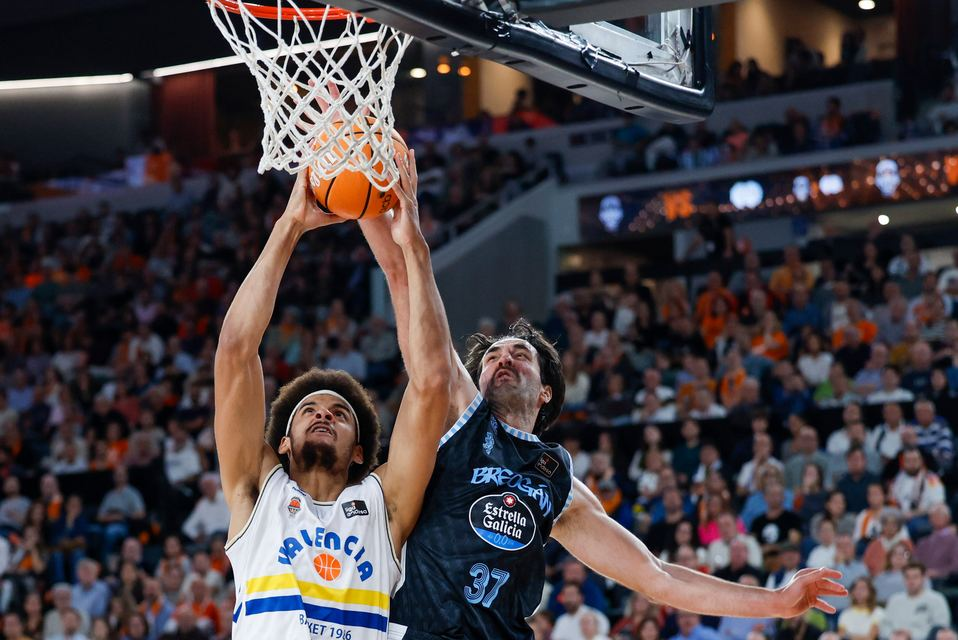

El Valencia Basket celebra su 40 aniversario con un récord de anotación: 129 puntos

El equipo de Xavi Albert dice que mantiene los pies en el suelo gracias a un calendario que le recuerda la exigencia de lo que viene por delante
El Valencia Basket guardó la equipación ‘taronja’ y salió al Roig Arena vestido de blanco, una vestimenta retro, la primer que lució, para festejar su 40 aniversario. Pero la verdadera celebración fue la victoria ante el Río Breogán por 129-111. Esta anotación es la más alta de su historia y la segunda más elevada de este siglo para un equipo en 40 minutos, un punto por debajo de la cifra que alcanzó el Kosner Baskonia ante el Baxi Manresa el pasado 18 de enero (130-85). El anterior tope del Valencia estaba en 127, logrados hace dos temporadas ante el Leyma Coruña.